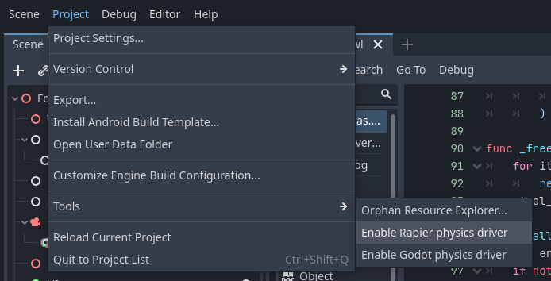

Physics
At the time of writing official Godot releases have no support for manually stepping physics simulations. As such if you want to use physics nodes with rollback such as RigidBody you will need to run either a fork that supports stepping or use an alternate physics addon that exposes stepping.
Tip
An example game demonstrating physics and rollback is available: Godot Rocket League.
Known Options
- Godot with Stepping PR: Build the Godot editor and relevant export templates manually with the physics stepping PR applied. See the Godot documentation for compilation instructions.
- Rapier Physics Addon: A third-party 2D/3D physics engine for Godot with stepping support. Visit godot.rapier.rs for details.
- Blazium Fork: A Godot fork with enhanced physics features, including stepping. Learn more at blazium.app.
Tip
For using Godot with the Stepping Physics PR applied, a community run repository is available with a custom build. Note that this repository and its builds are provided as-is, and are not associated with Godot nor the PR's author.
Enabling Physics Engine Rollback
To enable physics rollback, add the appropriate physics driver node to the root of your scene tree based on your physics engine. Because stepping methods are unavailable in standard Godot the classes are hidden to avoid compile errors. You will need to enable them in the editor by going to Project -> Tools -> Enable physics driver
- PhysicsDriver2D or PhysicsDriver3D for Godot’s default physics or Blazium.
- RapierPhysicsDriver2D or RapierPhysicsDriver3D for the Rapier Physics Addon.
These nodes disable Godot’s default physics processing and step the physics simulation at netfox’s network tick rate.

Physics Driver Configuration
Physics Factor - Controls the number of physics steps per network tick. For example, if your network tick rate is 30 Hz (one tick every ~33ms) but you need a 60 Hz physics simulation for smoother collisions, set this to 2 to run two physics steps per tick.
Rollback Physics Space - When enabled, rolls back all physics objects in the scene tree. Depending on how complex your scene tree is you may wish to only rollback specific nodes for performance rather than the entire simulation space.
NetworkRigidBody
NetworkRigidBody2D and NetworkRigidBody3D nodes enable RigidBody synchronization with RollbackSynchronizer, keeping clients in sync with the server’s physics simulation. These nodes can replace standard RigidBody nodes with some minor setup.
Note
Avoid using StateSyncronizer with NetworkRigidBody, as it doesn't participate in rollback it will end up stepping faster than other nodes.
To make use of NetworkRigidBody you need to:
- Configure your RollbackSynchronizer to include the NetworkRigidBody's
physics_stateas a state property. - Move physics-related logic from
_physics_processto_physics_rollback_tick.